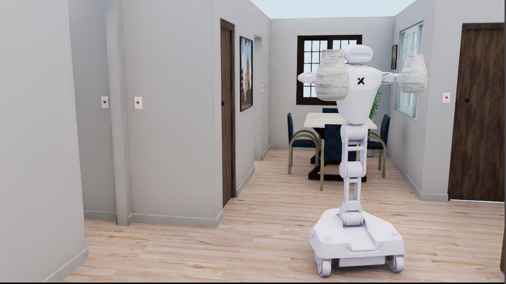

Task Distribution
Overview of the task distribution across categories.
Submission companion page (non-anonymous).

Teaser. Original paper figure file: esi_teaser_v11.pdf.
Overview of the task distribution across categories.

Task examples used in the paper narrative.

Complexity and average interaction step analysis.
Extended qualitative results and case studies.

Infer valid action order from state dependencies.


Cross-view route planning over extended trajectories.


Judge reachable passages under geometry constraints.

Recognize semantic/spatial region boundaries.

Understand connectivity of navigable spaces.

Distinguish visually similar categories.

Count objects with partial visibility.

Maintain recognition across lighting conditions.

Integrate distributed clues into coherent counting.

Segment instances in cluttered scenes.

Reason about enclosed and contained entities.



Compare size/scale relationships between objects.


Compare object-to-object distance magnitudes.


Ground objects under partial blocking.


Parse scenes with transparent media.


Avoid inconsistent inference across viewpoints.

Assess whether objects can fit into containers.

Reason about liquid-specific capacity behaviors.


Handle rigid-object capacity limitations.

Predict stable vs unstable object configurations.
Understand motion under inclined geometry.

Infer geometric layout relationships.

Identify collinearity/alignment structures.

Detect contact and touching constraints.

Verify physically plausible reflections.

Relate reflected and direct-view geometry.

Match entities between scene and reflection.

Track interacting entities over time.

Infer hidden state transitions from evidence.